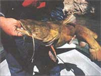

BOURNE STRIKES OUT
Sluggish, scum-sucking bottom-feeders or wily, powerful channel cats?
"Come on down to the Chowan," he said. "We'll catch one that'll go 20, heck, maybe 40 pounds." Phil Livesay, a longtime fishing buddy was singing the siren's song over the telephone and it was working like a charm. The Chowan River curls down from Virginia in a wide, tea-colored swath to empty into North Carolina's Albemarle Sound. It's the home of our grail, a fish with the whiskers of a walrus and nearly the same girth: the Chowan River channel cat.
Aesthetes in the angling world may disdain the lowly cat as a dull, sluggish,scum-sucking bottom feeder with a penchant for putrid meat. Some undoubtedly are. But the wily channel cat and its big brothers, the blue and flathead, are the poor man's marlin - fish so agile, so discerning, so powerful, and sometimes just so darned big that they leave other freshwater fish floundering in their wake. The big catfish can grow up to five feet long and weigh more than 130 pounds. One of the most accessible game fish, catfish are the largest family of freshwater fishes endemic to North America, with some 40 species found in the US and Canada. More than 2,200 catfish species haunt rivers and lakes worldwide. And in the frying pan, where the caviar is separated from the fish eggs so to speak, the mild flesh of the channel cat will beat the pants off of a marlin every time.
A few days after our telephone conversation, we were skimming over a light Chowan chop in Phil's 16-foot skiff just off of Perry's Beach, a small clutter of cottages near the hamlet of Colerain, North Carolina. "Most people think that the best way to catch a catfish is to use rancid meat, cat food, or some other stink bait," Phil yelled over the whine of the old Chrysler outboard. "But I've always had the best luck with fresh bait - worms and minnows." The day before, he and his wife Renee had gone worming along a nearby ditch bank, turning over the damp, soft loam with a shovel until they had half-filled a coffee can with red wigglers and soil. Renee, who is smaller than the biggest catfish, but every bit as feisty, has had catfish fever for more than a year now, ever since she hooked a 15-pound channel cat on a six-pound test line and fought it skillfully for 45 minutes before landing it. "When I hooked that fish I thought I had snagged the bottom," Renee says, a wistful look in her eye. "Then the bottom started to move."
Renee sat in the bow of the boat, her dark curls blowing in the light southwesterly breeze as we headed for a small creek mouth to seine for minnows. We found them in the shallows, sardine-sized slivers of flickering light. Catfish are really connoisseurs, Phil explained. They love small herring fry that swarm through the shallows in late spring and early summer. But herring don't live long in captivity, which reduces their value as bait. His second preference are common river minnows, or shiners, which are just as abundant as catfish. After four sweeps with the 20-foot seine, we had about three dozen minnows swimming contentedly in a five-gallon bucket.
Phil has been fishing this part of the Chowan since before he could cast a cane pole, and the river's nooks and crannies are imbedded in his memory. On the western shore, steep, clay bluffs drop to the water's edge, where they give way to sandbars and deep channels. Here the cats often doze in the daytime. On the eastern shore, nearly a mile away, is a flooded cypress forest whose knees and roots provide shelter for a variety of small bait fish. Here the big fish prowl the shallows, hunting minnows like their feline counterparts stalk songbirds. Phil decided to try the cypress first.
My first catfish tackle as a boy was a stout cane pole, a hook that seemed as thick as a ten-penny nail, and a line strong enough to haul up the transatlantic cable. Today's gear is more refined but just as simple. We rigged up three light spinning rods with a quarter-ounce sinker and two number six hooks tied about a foot apart, beginning a foot from the lead. For an added attraction, Phil added a tiny silver spoon near the sinker and finished it off by clipping a round, red and white bobber to the line in order to keep the bait just off of the bottom.
I threaded a worm on one hook and a minnow on the other, piercing the small fish through the back near its dorsal. I tossed it near a cypress where I could see the bobber and made myself comfortable in the bottom of the boat. Catfishing, unlike other forms of angling, gives one cause for contemplation. There are no noisy stickbaits to retrieve, no plastic worms to wiggle, no backlashes to pick out. There's just the sky, the world, and a bobber full of possibilities.
- whereupon Renee
confessed that they had
recently spent an evening
watching the latest catfishing
video.
Renee sat in a deck chair in the bow, Phil was draped across the captain's chair in the stern, and I stretched out in the middle. The sun warmed our hides as we watched an osprey wheel on the currents overhead, bent on a similar, if more active mission. The talk turned from politics, to inlaws, to whether worms actually feel the hook, to art - whereupon Renee confessed that they had recently spent an evening watching the latest catfishing video. The conversation went something like this:
Me: "You watched a what?"
Renee: "A catfishing video. We got it just for laughs, but halfway through, Phil started taking notes.
Phil: "Did not."
Renee: "You did so. Then he called over my sister and brother-in-law and made them watch it."
Me: "How was it?"
Renee: "Not as bad as you'd think. The star was this big hairy guy named Creature, or was it Frog? Toad. It was definitely Toad. When he squatted down he had plenty of rear cleavage."
Me: "Excuse me?"
Phil: "Renee - "
Renee: "You know, between his shirt-tail and his pants. Rear cleavage."
According to the hairy Toad, Renee said, the first major rule of catfishing is that at least one person in the party had to have a nickname. Phil immediately christened her "Sweetpea." The words had scarcely left his lips when, Renee's bobber dove for the bottom. She jerked the rod up, carving a question mark in the air, and soon a fat bream with its iridescent reds, yellow, and greens lay thumping in the bottom of the boat.
The fish proved another fundamental law of fishing: whenever men cast lines with women, women always catch the first fish.
After the initial excitement, the action, tapered off in the rising midday heat. We tried a a few other spots among the cypresses, and then cruised back to Perry's Beach for a lunch of thick ham sandwiches and beer. Sitting on Phil's mother's porch, we discussed the afternoon strategy. He said the video recommended fishing the hole, the run, and the riffle (a sign that he was at least paying attention). That morning he'd hoped to catch the fish moving into the shallows around the cypresses to feed, but in the afternoon he wanted to try a few deep holes and channels where they sometimes rested during the day. Even when not actively hunting, catfish are opportunistic feeders and often can't resist a morsel dangling right in front of their whiskers.
After lunch we headed upriver past a number of pound nets, the maze-like sets of stakes and nets that lead migrating herring into a net impoundment or "pound." Phil says he has seen the pounds turn silver with the small, oily fish while ospreys dove into them like sharks in a frenzy. The water quality of the Chowan has been degraded in the past because paper mills and fertilizer plants upstream used to dump dyes and chemical nutrients in the river, spurring massive algal blooms. The fertilizer plant has since closed and the paper mill was forced to clean up its act, so the river is now on the mend. Herring are once again filling the pounds and more ospreys return to nest every year.
Fully prepared, we
cast our lines into the
water and sat calmly,
like Jonah, and waited
for our whale.
Phil flipped on the depth finder and found a channel about 25 feet deep. We took the bobbers off and let the baits drift for a while but we couldn't raise a strike, so we tried a sandy point where the water depth drops from inches to 20 feet in a few yards. Somewhere along this underwater wall of sand we hoped to find our fish. Here we could also stagger the baits at different depths to give the fish more options. To give added authority to our angling mission, we scavenged a few forked sticks and thrust them in the sand for rod holders. Fully prepared, we cast our lines into the water and sat calmly, like Jonah, and waited for our whale.
It didn't take long. A twitching rod-tip brought my hands to the reel and I struck like a madman, only to find the line firmly embedded in what felt like a sunken pickup truck. I tried to clear it from the snag, to no avail and was forced to break the rig off. Soon Renee was in the same fix. Within 30 minutes we lost three rigs, and Phil, anxious about his tackle supply, suggested a more strategic venue. We got back in the boat and headed towards the structure until Phil located it on the depth finder. We anchored right on top of it.
Now there comes a time when the moon and stars align in the heavens and the water temperature rises to the exact degree when the structure and the depth and the luck of the angler combine to make fish ravenously hungry. This was such a time. Renee immediately hooked a nice white perch, a delicious, schooling panfish that weighed about a pound. Phil soon had another one in the stern. As my rod tip began to jitter, I remember thinking that if we couldn't catch a monster cat at least we wouldn't go hungry.
Then my line started tearing off the spool, accompanied by the high whine of the little reel's drag. I felt the power in the rod as it bent toward the water. Out of the corner of my eye, I saw Phil jump to attention. In the bow I heard Renee whisper, "Oh, my Lord!" In my mind I envisioned how the fight would ensue: the long powerful runs to deep water, the careful chase as Phil cranked the outboard and followed, the whine of the six-pound monofilament as it stretched to the breaking point. The photo in the papers. The glory. The sponsorships from tackle companies. Instead, the fish made three nice little runs and scrambled to the surface - a frisky, pound-and-a-half channel cat. He was the perfect size for eating but a little small for glory. I grabbed him behind his pectoral and dorsal fins to avoid the spines on the leading edges and removed the hook while he grinned like a fat little Frenchman. His smooth, white and bronze skin was speckled with brown spots and was as pretty as any trout. I threw him back to grow.
Our victory ground turned out to be a white perch palace and we brought them in with dizzying consistency for about forty minutes. Renee caught another catfish a few inches long, spurring hopes that a big one lurked nearby. If it did, we will never know. Our grail still haunts the murky bottom, mocking us and waiting patiently for another day.
For the folks that chase the cats, the siren's song is as strong as ever.
|
A Diverse Group of Hunters:Above : Some serious channel cats. Below: Joel Bourne's afternoon catch |
Bourne on the Hunt: First Lesson: At least one person in the hunting party has to have a nickname |
 A Real Catch:If you are able to avoid discouragement, monster channel cats, are lying in wait |
|
|
|
|
|
|
|
|